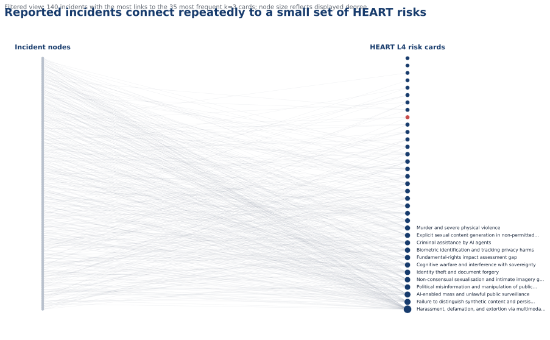
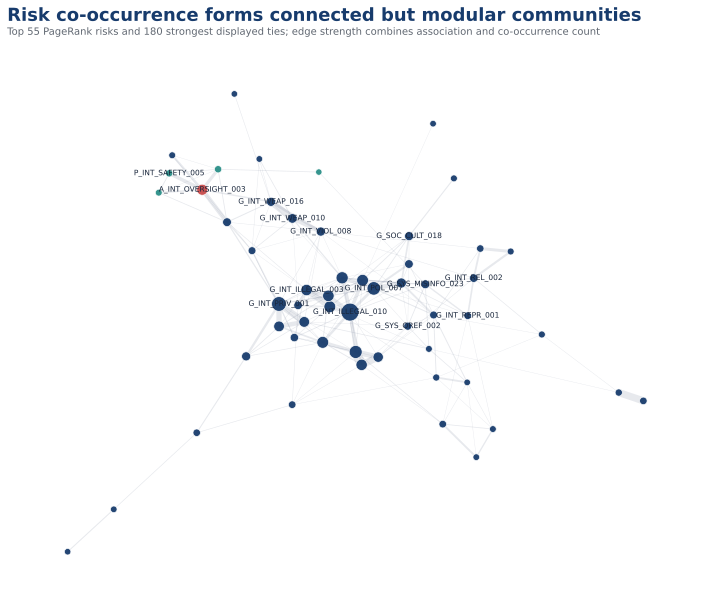
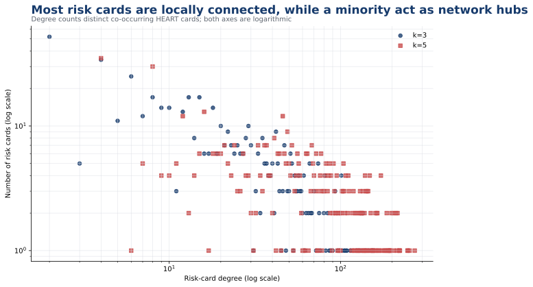
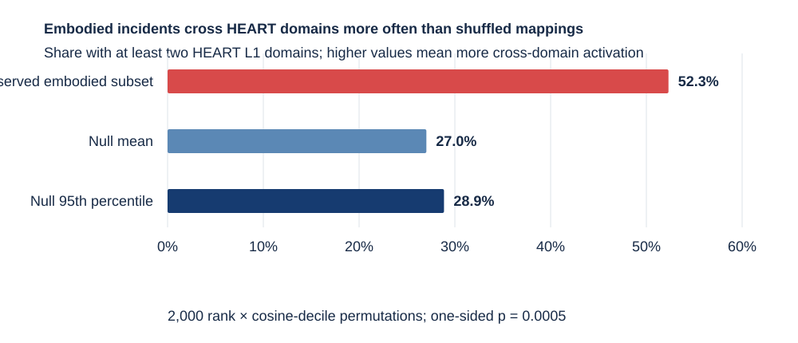

HEART incident evidence · 21 October 2026
Reported AI incidents concentrate around a connected core of recurring risks
OECD AIM, AIID and the MIT AI Incident Tracker were normalized at source-record level, linked without double-counting MIT's AIID-derived records, and mapped to HEART L4 risk cards. The results describe public reporting and model-based semantic correspondence—not incident prevalence, causal frequency, or risk severity.
Source harmonization
The public release keeps one row per source record and a separate canonical event table. OECD AIM rows carrying an AIID ID are linked to AIID; MIT Tracker records are treated as AIID enrichments rather than new events. Two additional title/date matches are retained only as review candidates and are not merged.
| Source | Role | Snapshot | Severity treatment |
|---|---|---|---|
| OECD AI Incidents Monitor | Incident and hazard monitor; this analysis retains only records labelled “AI incident” | 2026-08-24 | Not available in the local snapshot; no imputation |
| AI Incident Database | Canonical incident identity and report linkage | 2026-10-19 | CSET where published; MIT enrichment where linked |
| MIT AI Incident Tracker | AIID-derived risk, cause, harm and 1–5 severity classification | 2026-10-21 | Model-generated classification; not systematically human validated |
A bipartite view reveals repeatedly activated HEART cards
Each line links one reported incident to one of its three closest HEART cards; the displayed network is filtered for legibility, while all 11,119 incidents are included in downloadable metrics.

Risk co-occurrence is connected yet divided into interpretable communities
A tie joins two HEART cards when both fall within the same incident's top-three mappings; larger nodes recur across more incidents and stronger ties combine normalized association with repeated co-occurrence.

A small minority of cards connects much of the reported-incident space
Degree counts distinct co-occurring HEART cards; right-shifted points connect to more kinds of risk, while upper points show how many cards have that degree.

Network structure and hubs
Most frequently activated cards
| HEART ID | Risk card | Incidents | PageRank | Betweenness |
|---|---|---|---|---|
G_INT_ILLEGAL_010 | Harassment, defamation, and extortion via multimodal deepfakes | 1,905 | 0.0054 | 0.0259 |
G_INT_PRIV_001 | AI-enabled mass and unlawful public surveillance | 1,204 | 0.0057 | 0.0261 |
G_INT_POL_007 | Political misinformation and manipulation of public opinion | 975 | 0.0043 | 0.0056 |
G_INT_SEX_004 | Non-consensual sexualisation and intimate imagery generation | 889 | 0.0037 | 0.0077 |
G_SYS_MISINFO_010 | Failure to distinguish synthetic content and persistent harm | 755 | 0.0027 | 0.0027 |
G_SOC_DEMOC_002 | Cognitive warfare and interference with sovereignty | 747 | 0.0036 | 0.0176 |
G_INT_PRIV_029 | Unauthorised commercial use of name, image, and likeness | 701 | 0.0036 | 0.0089 |
G_INT_ILLEGAL_008 | Financial crimes and fraud | 692 | 0.0039 | 0.0126 |
Bridge cards by betweenness
| HEART ID | Risk card | Incidents | PageRank | Betweenness |
|---|---|---|---|---|
A_INT_OVERSIGHT_003 | Automated-driving control-transfer failure | 576 | 0.0091 | 0.0684 |
G_SYS_MISINFO_023 | Misleading medical information and unsafe medication guidance | 287 | 0.0052 | 0.0480 |
G_SYS_OREF_002 | Denial of access to legitimate information due to exaggerated safety filtering | 201 | 0.0042 | 0.0313 |
G_INT_ILLEGAL_003 | Criminal assistance by AI agents | 632 | 0.0046 | 0.0291 |
G_INT_UNETH_003 | Academic misconduct from LLM misuse | 87 | 0.0040 | 0.0264 |
G_INT_PRIV_001 | AI-enabled mass and unlawful public surveillance | 1,204 | 0.0057 | 0.0261 |
G_INT_ILLEGAL_010 | Harassment, defamation, and extortion via multimodal deepfakes | 1,905 | 0.0054 | 0.0259 |
G_SYS_EVAL_037 | Fundamental-rights impact assessment gap | 527 | 0.0037 | 0.0249 |
The incident-frequency hubs are dominated by deepfakes, surveillance, political manipulation, sexualised imagery and fraud. The strongest bridge is automated-driving control-transfer failure, which links physical-safety incidents to otherwise separate general and agentic-risk neighborhoods. Hub status partly reflects what public databases report and what HEART distinguishes into separate cards.
Cross-domain incident structure survives a non-circular validation design
The validation mapping embeds only incident title, narrative and AI-system description; source risk and harm labels are held out. Positive evidence means independent labels recover the expected HEART domain, not that every individual card is correct.

Actual incidents cross HEART domain boundaries
In the non-circular top-three mapping, 1,760 of 11,119 incidents activate cards from more than one L1 domain. The pattern remains after controlling for home-domain size, retrieval confidence and incident-text length.
| Top-three domain composition | Incidents | Share of 11,119 |
|---|---|---|
| General only | 9,285 | 83.50% |
| Agentic only | 11 | 0.10% |
| Physical only | 63 | 0.57% |
| General + Agentic | 1,067 | 9.60% |
| General + Physical | 293 | 2.64% |
| Agentic + Physical | 204 | 1.83% |
| General + Agentic + Physical | 196 | 1.76% |
Controls separate domain crossing from taxonomy size
| Control | Observed result | Comparator | Inference |
|---|---|---|---|
| Home-domain-stratified embodiment permutation | 52.31% cross-domain, 95% CI 49.63% to 54.91% | Expected 44.49%; O/E 1.176 | p=0.0005, 2,000 permutations |
| Adjusted logistic regression | Embodiment odds ratio 2.765 | 95% CI 2.274 to 3.363 | Adjusted for home domain, top-1 similarity and rank-1 to rank-3 similarity gap |
| Matched non-embodied control | Embodied 52.31%; control 14.88% | Difference 37.43 percentage points | 1,344 pairs matched on top-1 similarity and text length |
| Description network | 14.34% cross-domain edges, r=0.605 | Permutation expectation 35.54%; O/E 0.403 | Definitions cluster strongly within their assigned domains |
| Incident coactivation network | 18.23% cross-domain edges, r=0.224 | Permutation expectation 35.42%; O/E 0.515 | Reported incidents mix domains more strongly than card definitions do |
The lower incident-network assortativity does not mean that the three-domain taxonomy is invalid. It means that a reported event can combine several mechanisms: system performance, autonomous action, human control transfer and physical harm may occur in one incident chain. Both networks remain more domain-homogeneous than a random label assignment, but the incident network is less segregated than the definition network.
Reported cases show how mechanisms combine
| Incident | Reported event | Non-circular top-three HEART candidates | Cross-domain reading |
|---|---|---|---|
| AIID 1693 | An AI agent reportedly searched for application vulnerabilities, modified personal data and accessed invoices. | G_INT_PRIV_012 0.656G_SYS_SECADV_005 0.643A_INT_COLLUSION_003 0.639 | Privacy and security harms are General risks, while autonomous multistep safeguard bypass introduces an Agentic mechanism. |
| AIID 596 | Cruise driverless vehicles were investigated for risky behaviour around crosswalks and pedestrians. | A_INT_OVERSIGHT_003 0.640P_INT_SAFETY_016 0.597P_INT_SAFETY_005 0.593 | Automated-driving oversight and control transfer are Agentic; pedestrian proximity and collision control are Physical. |
| OECD AIM 2026-01-17-432f | A Singapore autonomous shuttle detected an object, requested human takeover and struck a road divider during the takeover. | P_INT_SAFETY_005 0.606A_INT_OVERSIGHT_003 0.579P_SYS_STATE_009 0.550 | Physical perception and collision risks coincide with an Agentic human-control-transfer failure. |
| AIID 1232 | A fatal vehicle crash reportedly involved automated-driving failure and electronic door-handle failure after impact. | A_INT_OVERSIGHT_003 0.566P_INT_SAFETY_005 0.512G_SYS_PERF_014 0.502 | Control transfer, collision avoidance and inappropriate automation-level design activate Agentic, Physical and General candidates in the same event. |
Control-analysis downloads: key results; network permutation comparison; case mappings; complete summary; integrity checks; methods and limitations.
Independent source labels give uneven, informative support
| Held-out validation label | Eligible incidents | Precision | Recall | MCC |
|---|---|---|---|---|
| MIT agent/multi-agent behaviour → Agentic HEART card | 1,752 | 10.4% | 41.8% | 0.146 |
| MIT physical AI goal → Physical HEART card | 1,752 | 65.5% | 74.7% | 0.665 |
| CSET physical-system label → Physical HEART card | 208 | 93.0% | 32.8% | 0.356 |
| AIM physical-harm label → Physical HEART card | 10,145 | 57.2% | 21.9% | 0.284 |
MIT physical-goal labels provide the strongest external check (precision 65.5%, recall 74.7%, MCC 0.665). CSET physical-system labels are highly precise but incomplete; AIM physical-harm labels have broader coverage but low recall for Physical-AI cards because physical harm can arise from non-embodied systems. MIT agent labels only weakly recover Agentic HEART cards, signalling that behaviour labels and HEART's risk-domain ontology are not interchangeable.
Different cards bridge semantic proximity and reported co-occurrence
Betweenness measures how often a card lies on shortest paths; cross-domain share reports the fraction of its neighbours outside its own General, Agentic or Physical domain.
| Network | HEART ID | Risk card | Betweenness | Cross-domain neighbours |
|---|---|---|---|---|
| Incident co-occurrence | A_INT_OVERSIGHT_003 | Automated-driving control-transfer failure | 0.078 | 89.5% |
| Incident co-occurrence | G_SYS_MISINFO_023 | Misleading medical information and unsafe medication guidance | 0.039 | 11.1% |
| Incident co-occurrence | G_INT_ILLEGAL_003 | Criminal assistance by AI agents | 0.033 | 14.2% |
| Incident co-occurrence | G_INT_PRIV_001 | AI-enabled mass and unlawful public surveillance | 0.032 | 10.9% |
| Incident co-occurrence | G_INT_REPR_001 | Biased statements and recommendations | 0.025 | 6.9% |
| Semantic | G_INT_VIOL_010 | Threats and intimidation | 0.076 | 3.5% |
| Semantic | G_SOC_GOV_035 | Systemic failure of AI regulation and oversight | 0.068 | 17.9% |
| Semantic | A_SYS_GOAL_007 | Existential and catastrophic risk from advanced AI systems | 0.056 | 84.4% |
| Semantic | G_SYS_MISINFO_012 | False information targeting an individual | 0.025 | 0.0% |
| Semantic | G_SYS_OEXT_007 | Misrepresentation of autonomous and independent decision-making capabilities | 0.022 | 5.7% |
Automated-driving control-transfer failure is the leading incident-network bridge at both k=3 and k=5, with nearly nine in ten neighbours in other L1 domains. In the semantic network, threats and intimidation and systemic regulatory failure occupy central paths, while existential and catastrophic risk has the strongest cross-domain bridging among the leading semantic cards. Full k=3 and k=5 rankings are downloadable.
Generic wording explains some hubness, but not the leading incident hubs
Residual rank removes the association between log incident degree and similarity to the all-card semantic centroid, with HEART L1 fixed effects; a high positive residual means more incident connections than textual generality predicts.
| Residual rank | Raw rank | HEART ID | Risk card | Incidents | Residual |
|---|---|---|---|---|---|
| 1 | 1 | G_INT_ILLEGAL_010 | Harassment, defamation, and extortion via multimodal deepfakes | 1,946 | 4.922 |
| 2 | 9 | A_INT_OVERSIGHT_003 | Automated-driving control-transfer failure | 630 | 4.653 |
| 3 | 13 | G_INT_PRIV_003 | Biometric identification and tracking privacy harms | 534 | 4.254 |
| 4 | 5 | G_SOC_DEMOC_002 | Cognitive warfare and interference with sovereignty | 898 | 4.249 |
| 5 | 6 | G_SYS_MISINFO_010 | Failure to distinguish synthetic content and persistent harm | 794 | 4.188 |
| 6 | 4 | G_INT_SEX_004 | Non-consensual sexualisation and intimate imagery generation | 943 | 4.144 |
| 7 | 16 | G_INT_SEX_009 | Sexual harm and exploitation of minors | 442 | 3.947 |
| 8 | 2 | G_SYS_MISINFO_015 | Generation of false information about election procedures | 1,139 | 3.849 |
Centroid similarity is strongly associated with raw hub degree (model R²=0.164; centroid p<0.001), confirming a hubness artifact. Yet deepfake harassment remains first after adjustment, and automated-driving control-transfer rises from raw rank 9 to residual rank 2. These are not merely generic-card effects.
Benign requests can still lead to harmful execution
Cases are database-reported examples in which an assistant or agent pursued an ordinary request, misunderstood it, exceeded authority or supplied unsafe help; they are not independent causal adjudications.
| Incident | Reported case | Screening category |
|---|---|---|
| AIID 160 | Alexa Recommended Dangerous TikTok Challenge to Ten-Year-Old Girl | benign request misinterpreted; unsafe assistance to ordinary request |
| AIID 693 | Google AI Reportedly Delivering Confidently Incorrect and Harmful Information | unsafe assistance to ordinary request |
| AIID 227 | Waze App Allegedly Caused Tourists’ Car to End up in Lake Champlain, Vermont | benign request misinterpreted |
| AIID 1028 | OpenAI's Operator Agent Reportedly Executed Unauthorized $31.43 Transaction Despite Safety Protocol | benign request misinterpreted; task overreach or unauthorized action |
| AIID 1441 | Claude Cowork Allegedly Deleted Folder Containing 15 Years of Family Photos While Organizing User's Wife's Desktop | benign request misinterpreted; task overreach or unauthorized action; unsafe assistance to ordinary request |
| AIID 1469 | PocketOS Production Database Was Reportedly Deleted by Cursor AI Agent Running Claude Opus 4.6 | task overreach or unauthorized action; unsafe assistance to ordinary request |
No incident literally involving a microwave was found. The closest reported analogues are Alexa recommending the electrical “penny challenge”, Google AI returning dangerous cooking and cleaning advice, Waze directing a vehicle into a lake, Operator purchasing groceries without authorisation, and Claude/Cursor agents deleting user or production data while carrying out organisational or staging tasks.
Validation downloads
Methods, provenance and limitations
- Occurrence filter: OECD AIM hazards were excluded; AIID incidents and near-harms were retained because the source does not expose a complete event-level near-miss flag.
- Deduplication: exact AIID identifiers determine merges. Normalized titles, dates, entities and fingerprints remain available for future review; fuzzy candidates are never merged automatically.
- Mapping: the primary descriptive mapping embeds incident title, description, source risk label, harm type and AI-system fields. The validation and control analyses use a separate non-circular mapping restricted to title, narrative and AI-system description, with source labels held out. Both use the same BGE-M3 model as HEART and retain top-5 candidates with explicit k=3 and k=5 flags.
- Networks: the bipartite graph uses incident–card edges. The projected risk network connects cards co-mapped to an incident; raw count, Jaccard and association strength are all released.
Limitations: source coverage is selective and news-driven; MIT classifications are produced by an LLM pipeline and are not systematically validated; severity is unavailable for most OECD AIM rows; top-k mapping forces a fixed number of links even for ambiguous records; 92% of k=3 edges fall in General AI, reflecting both corpus composition and taxonomy granularity. Results therefore support pattern discovery, not prevalence, incidence-rate, or causal claims.
Download the reproducible data
- Normalized source records
- Canonical analysis incidents (compact)
- Incident–HEART mappings (k3 and k5)
- Duplicate-review candidates
- Risk-node metrics
- Risk co-occurrence edges
- Graph-level metrics
Sources: OECD AI Incidents Monitor; AIID sanctioned snapshots; MIT AI Incident Tracker. Snapshot and field-level provenance are retained in the downloads.